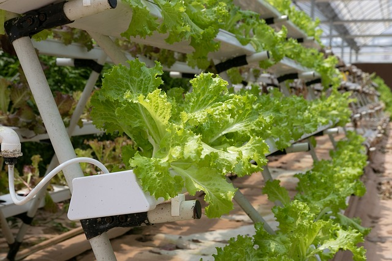

Quer uma horta, mas seu espaço em casa é pequeno?.

Foto: Pixabay/reprodução
Por Amanda Bombana Pasa em 24/06/2024.
Para resolver esse problema, a hidroponia é uma excelente solução.
A hidroponia é uma técnica de cultivo desenvolvida e aprimorada ao longo dos anos, conhecida por sua eficiência na produção de muitas culturas. Método de cultivo de plantas sem solo, onde as raízes recebem soluções nutritivas diretamente na água, onde permite o controle preciso dos nutrientes que a planta recebe, além de economizar água. Por ser adaptado á locais pequenos como plantar na vertical, economiza espaço, mas também pode ser plantado na horizontal.
Essa prática de cultivo é muito utilizada comercialmente e por amantes de jardinagem idoor devido aos benefícios e eficiência no crescimento das plantas.
Cada planta tem suas próprias exigências para o cultivo, por isso é importante conhecer seus detalhes específicos. Quando suas necessidades são atendidas adequadamente, as plantas respondem de forma positiva. Por outro lado, o oposto também é verdadeiro. Um exemplo é o morango, que é bastante exigente quanto à umidade do solo, já que suas raízes não toleram altos níveis de EC (Condutividade Elétrica).
Quem pode realizar o cultivo de hidroponia?
Sistema NFT (Nutrient Film Technique): Uma fina película de solução nutritiva flui continuamente em um canal inclinado, onde as raízes ficam suspensas e têm acesso constante a nutrientes.
Sistema de Gotejamento: Fornece água e nutrientes diretamente às raízes das plantas, cultivadas em recipientes individuais preenchidos com um meio inerte como perlita ou fibra de coco. É versátil e adequado para uma variedade de culturas.
Sistema de Cultivo em Leito Flutuante: As plantas são cultivadas em bandejas que flutuam em uma solução nutritiva. As raízes ficam submersas na solução, recebendo oxigênio através de bolhas de ar.
Sistema de Aeroponia:As raízes das plantas são suspensas no ar e recebem névoa ou spray de uma solução nutritiva. Esse método permite uma oxigenação excelente das raízes e um crescimento rápido das plantas. É utilizado para cultivo de plantas delicadas e de rápido crescimento.
Sistema de Wick: A solução nutritiva é absorvida por um pavio (wick) que conecta o meio de cultivo às raízes das plantas. É adequado para iniciantes e para o cultivo de plantas de pequeno porte.
Sistema de Fluxo e Refluxo (Ebb and Flow): As plantas são cultivadas em bandejas que são periodicamente inundadas com a solução nutritiva. Depois, a solução é drenada de volta para o reservatório. Esse ciclo de inundação e drenagem ajuda a oxigenar as raízes e é usado para várias culturas, incluindo vegetais de fruto.
Você sabe como começar a implementar esse método de cultivo em sua própria casa?
Seguindo estas dicas simples, você poderá ter um sistema de hidroponia funcional em sua casa em pouco tempo.
1. Escolha o tipo de cultura que você pretende cultivar.
2. Escolha o tipo de sistema de hidroponia que deseja utilizar.
3. Encontre um local bem iluminado para acomodar suas plantas.
4. Adquira os equipamentos e materiais necessários para montar o sistema, como reservatório de água, bomba de água (se necessário), tubos, vasos ou canaletas, meio de suporte, solução nutritiva específica para hidroponia, medidores de pH e EC.
5. Siga cuidadosamente as instruções de montagem do sistema de acordo com o tipo escolhido e as culturas que você vai plantar.
6. Monitore regularmente o sistema, verificando pH, EC e a saúde das plantas. Mantenha a solução nutritiva adequada e limpe o sistema conforme necessário para evitar problemas como algas ou obstruções nos tubos.
7. Acompanhe o crescimento das plantas e faça a colheita conforme necessário. Esteja atento às necessidades específicas de cada tipo de planta cultivada em hidroponia.
8. A hidroponia envolve um processo de aprendizado contínuo. Esteja aberto a experimentar novas técnicas e ajustar seu sistema conforme adquire mais experiência.